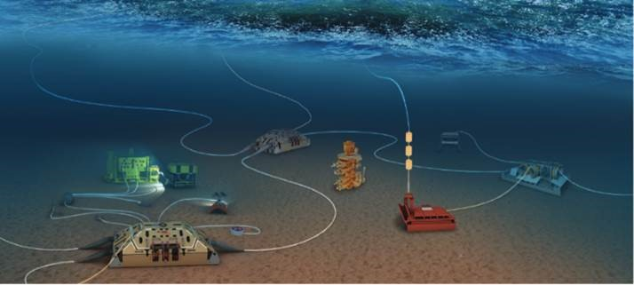
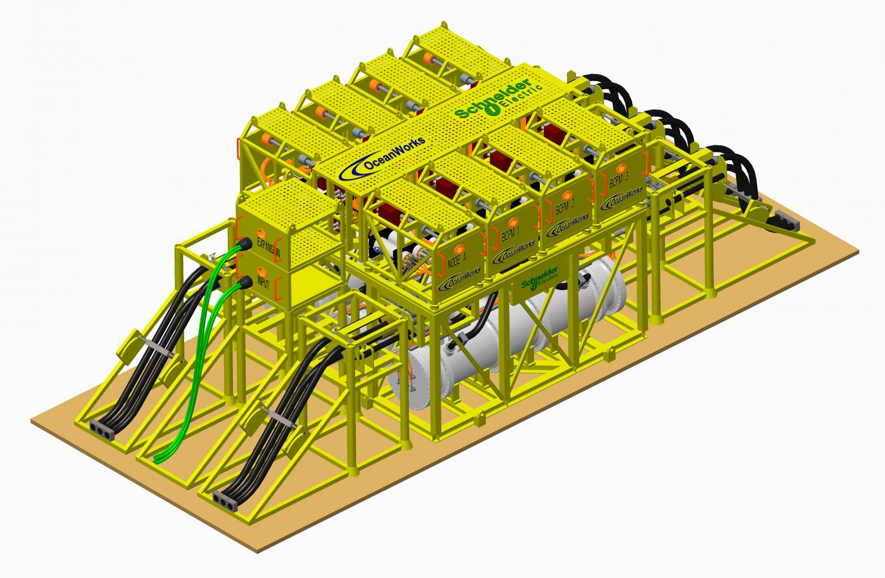

Power Distribution & Control
As the leading developer of seafloor networks since 2005, OceanWorks International has built four (4) separate networks ranging in depth from 150 msw to 3000 msw with network lengths ranging from 3km to over 800km. OceanWorks is also the only company to have developed more than a single network since February 2006 and has systems with over 1,000,000 hours of deployed node time. These systems provide both an independent power supply and communications infrastructure for instrumentation and control.
Applications to oil and gas include:
- Greenfield characterization
- Brownfield redevelopment
- Instrumentation overlays
- Permanent Reservoir monitoring
- Infrastructure for resident ROV and AUV docking stations
Subsea Power Distribution

Subsea power distribution should be considered as a complete system encompassing all elements from topside shore stations to subsea loads. In partner with Schneider Electric, OceanWorks has developed a system that brings Schneider Electric's proven GIS switchgear systems together with OceanWorks' proven and deployed monitoring and control systems to provide the greatest level of:
- Reliance on proven deployed systems
- Design for intervention
- Redundancy and reliability
- Monitored system performance
- Minimal footprint
- System design based on MTTF and MTTR
Subsea Instrument Interface Module (SIIM)

The SIIM provides a fully redundant infrastructure that allows us to connect a wide range of individually switched and monitored low voltage ports and communications options to support the many instruments used in oil and gas infrastructure. SIIMs can be used as a backbone to link SEMs, MPM, and infrastructure integrity monitoring equipment. (Datasheet)
- Input: Intermediate (375VDC) voltage power and copper communications
- Output: Low (15 to 48VDC) voltage power and copper communications
- Ports: 6 to 10 dry mateable connectors
- Redundancy: Optional fault tolerance for control, power and communications
- Power return: Cable
- Structure: Optional open instrument frame
Medium Voltage Converter

The Medium Voltage Converter (MVC) allows extension of seafloor networks from 10 km to over 800 km by using a direct 375VDC system. The selection of the MVC is dependent on the field layout and power requirements. A typical MVC consists of two power modules running in parallel. In normal operation, the load is distributed evenly between the two modules. With a design life in excess of 10 years, the two-module design allows for graceful degradation of the power supply in the event of a module failure. (Datasheet)
- Input: 1 kV to 10 kV
- Output: 375VDC
- Features:
- Over voltage protection against line transients
- Maximum power 2kW per MVC block. Multiple blocks can be placed in parallel
- Isolated telemetry
- Redundancy: Fault tolerant
- Power Return: Seawater
- Structure: Mounted inside a Primary Node
Subsea UPS
.JPG)
The OceanWorks Subsea Uninterruptable Power Supply (UPS) provides a reliable power source for a wide variety of subsea applications including Magnetic Bearing holdup, autonomous operation and load leveling applications. The UPS builds on proven designs previously deployed and qualified for a 25 year life with a 5 to 10 year battery maintenance cycle. The system is designed to provide maximum assurance of power delivery by using multiple redundant elements. Applications range from assured power to load leveling. (Datasheet)
- Input: 300VDC to 400VDC (or connected to a MVC to allow input up to 10kV)
- Output: 375VDC buffered
- Features:
- Modular
- Capacity: from 50kWhr to 1MWhr
- Ethernet based control and telemetry
- Redundancy: Independent modules, graceful degradation on failure
- Power Return: Seawater or cable
- Structure: Optimal trawl resistant frame
For more information please contact: sales@oceanworks.com